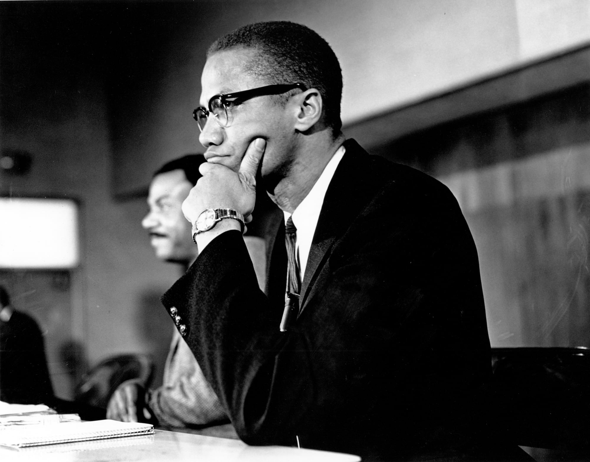
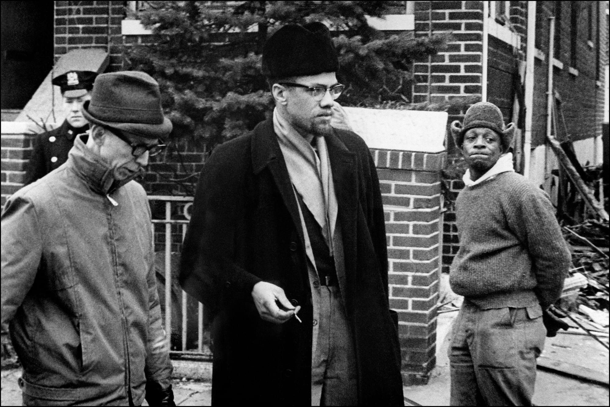
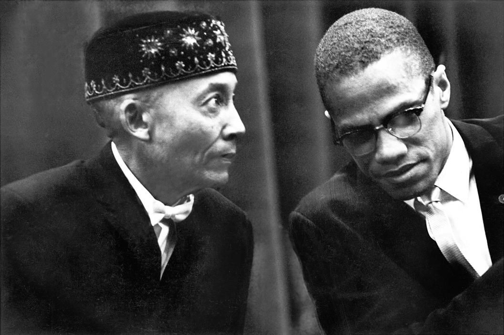

Malcolm X was an African American civil rights leader prominent in the Nation of Islam. Until his 1965 assassination, he vigorously supported Black nationalism.
Who Was Malcolm X?
Malcolm X was a minister, human rights activist and prominent Black nationalist leader who served as a spokesman for the Nation of Islam during the 1950s and 1960s. Due largely to his efforts, the Nation of Islam grew from a mere 400 members at the time he was released from prison in 1952 to 40,000 members by 1960.
A naturally gifted orator, Malcolm X exhorted Blacks to cast off the shackles of racism "by any means necessary," including violence. The fiery civil rights leader broke with the Nation of Islam shortly before his assassination in 1965 at the Audubon Ballroom in Manhattan, where he had been preparing to deliver a speech.
Early Life and Family
Malcolm X was born on May 19, 1925, in Omaha, Nebraska. He was the fourth of eight children born to Louise, a homemaker, and Earl Little, a preacher who was also an active member of the local chapter of the Universal Negro Improvement Association and avid supporter of Black nationalist leader Marcus Garvey.
Due to Earl Little's civil rights activism, the family was subjected to frequent harassment from white supremacist groups including the Ku Klux Klan and one of its splinter factions, the Black Legion. In fact, Malcolm Little had his first encounter with racism before he was even born.
When my mother was pregnant with me, she told me later, 'a party of hooded Ku Klux Klan riders galloped up to our home,'" Malcolm later remembered. "Brandishing their shotguns and rifles, they shouted for my father to come out.
The harassment continued when Malcolm was four years old, and local Klan members smashed all of the family's windows. To protect his family, Earl Little moved them from Omaha to Milwaukee, Wisconsin, in 1926 and then to Lansing, Michigan, in 1928.
However, the racism the family encountered in Lansing proved even greater than in Omaha. Shortly after the Littles moved in, a racist mob set their house on fire in 1929, and the town's all-white emergency responders refused to do anything.
"The white police and firemen came and stood around watching as the house burned to the ground," Malcolm X later remembered. Earl Little moved the family to East Lansing where he built a new home.
Two years later, in 1931, Earl Little's dead body was discovered lying across the municipal streetcar tracks. Although Malcolm X's family believed his father was murdered by white supremacists from whom he had received frequent death threats, the police officially ruled Earl Little's death a streetcar accident, thereby voiding the large life insurance policy he had purchased in order to provide for his family in the event of his death.
Malcolm X's mother never recovered from the shock and grief over her husband's death. In 1937, she was committed to a mental institution where she remained for the next 26 years. Malcolm and his siblings were separated and placed in foster homes.
Education
In 1938, Malcolm was kicked out of school and sent to a juvenile detention home in Mason, Michigan. The white couple who ran the home treated him well, but he wrote in his autobiography that he was treated more like a "pink poodle" or a "pet canary" than a human being.
He attended Mason High School where he was one of only a few Black students. He excelled academically and was well-liked by his classmates, who elected him class president.
A turning point in Malcolm Little's childhood came in 1939 when his English teacher asked him what he wanted to be when he grew up and he answered that he wanted to be a lawyer. His teacher responded, "One of life's first needs is for us to be realistic ... you need to think of something you can be ... why don't you plan on carpentry?"
Having thus been told in no uncertain terms that there was no point in a Black child pursuing education, Malcolm X dropped out of school the following year, at the age of 15.
After quitting school, Malcolm X moved to Boston to live with his older half-sister, Ella, about whom he later recalled, "She was the first really proud Black woman I had ever seen in my life. She was plainly proud of her very dark skin. This was unheard of among Negroes in those days."
Ella landed Malcolm a job shining shoes at the Roseland Ballroom. However, out on his own on the streets of Boston, Malcolm X became acquainted with the city's criminal underground and soon turning to selling drugs.
He got another job as kitchen help on the Yankee Clipper train between New York and Boston and fell further into a life of drugs and crime. Sporting flamboyant pinstriped zoot suits, he frequented nightclubs and dance halls and turned more fully to crime to finance his lavish lifestyle.
Time in Jail
In 1946, Malcolm X was arrested on charges of larceny and sentenced to 10 years in jail. To pass the time during his incarceration, he read constantly, devouring books from the prison library in an attempt make up for the years of education he had missed by dropping out of high school.
Also while in prison, Malcolm was visited by several siblings who had joined the Nation of Islam, a small sect of Black Muslims who embraced the ideology of Black nationalism — the idea that in order to secure freedom, justice and equality, Black Americans needed to establish their own state entirely separate from white Americans.
He changed his name to Malcolm X and converted to the Nation of Islam before his release from prison in 1952.
Nation of Islam
Now a free man, Malcolm X traveled to Detroit, Michigan, where he worked with the leader of the Nation of Islam, Elijah Muhammad, to expand the movement's following among Black Americans nationwide.
Malcolm X became the minister of Temple No. 7 in Harlem and Temple No. 11 in Boston, while also founding new temples in Hartford and Philadelphia. In 1960, he established a national newspaper, Muhammad Speaks, in order to further promote the message of the Nation of Islam.
Articulate, passionate and an inspirational orator, Malcolm X exhorted Blacks to cast off the shackles of racism "by any means necessary," including violence. "You don't have a peaceful revolution. You don't have a turn-the-cheek revolution,” he said. “There's no such thing as a nonviolent revolution."
His militant proposals — a violent revolution to establish an independent Black nation — won Malcolm X large numbers of followers as well as many fierce critics. Due primarily to the efforts of Malcolm X, the Nation of Islam grew from a mere 400 members at the time he was released from prison in 1952, to 40,000 members by 1960.